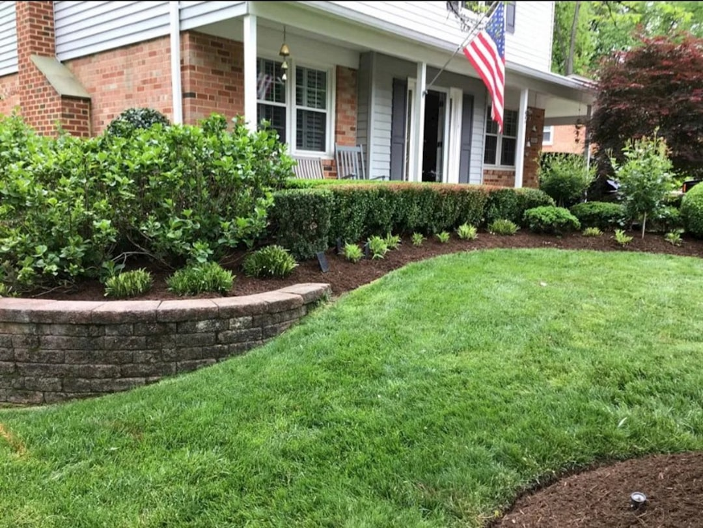

Retaining wall cost Toowoomba homeowners typically encounter ranges from $250 per square metre for treated pine sleepers up to $550 or more for rendered besser block. Material choice drives the biggest single cost difference, but site access, soil conditions and drainage requirements all shift the final figure. For walls above roughly one metre, council approval and a structural engineer's sign-off add to both timeline and cost, so factor those in before comparing quotes.
For local buyers, retaining wall cost toowoomba and knowing what drives each line item helps you compare quotes on equal terms.
Retaining Wall Cost Toowoomba Explained
Toowoomba sits on the crest of the Great Dividing Range at around 700 metres elevation. Steep slopes, reactive clay soils and tight block access push a quote higher before a post goes in. A wall on a flat block with easy truck access will always cost less than the same wall on a Range escarpment block, even with identical materials.
Three variables do the most work in any quote: the material chosen, the height and length of the wall, and the drainage package behind it. Understanding each one lets you compare quotes side by side rather than just the bottom-line number.
For an accurate estimate specific to your block, Retaining Wall Toowoomba offers a free on-site assessment with no obligation.
Material pricing compared: what each option delivers
The following ranges reflect installed costs including labour, drainage and standard backfill on a reasonably accessible Toowoomba block. They are a planning reference, not a fixed quote.
- Treated pine sleepers: $250 to $350 per square metre. The lowest entry point, suited to garden and boundary walls. Lifespan is shorter than hardwood or concrete.
- Hardwood and concrete sleepers: $300 to $500 per square metre. Hardwood offers a warm natural finish; concrete sleepers are low-maintenance and the most common modern choice in Toowoomba backyards. Both outperform pine on longevity.
- Sandstone blocks: $300 to $550 per square metre. Natural sandstone suits heritage streetscapes and established gardens. Pricing can reach the top of the band when courses need individual fitting on uneven ground.
- Rendered besser block: from $550 per square metre. The structural workhorse. Handles greater heights, suits engineered designs, and finishes render-ready. Most expensive but most capable near buildings or driveways.
What else shifts the final quote
Material cost per square metre is only part of the story. The following factors each add to the installed price.
- Drainage. A properly drained wall includes ag pipe, geofabric, 20 mm gravel backfill and weep holes. Some quotes omit drainage entirely; confirm it is itemised the same way in every quote you compare.
- Excavation and earthworks. Cutting into a steep Darling Downs slope costs more than building on a near-flat block. Ask whether excavation, levelling and backfill are included or charged separately.
- Soil type. Reactive clay, common across the Darling Downs, affects footing depth and sometimes material choice.
- Wall height. Taller walls require heavier posts, deeper footings and, beyond certain thresholds, structural engineering. The cost per square metre rises accordingly.
See our companion guide to retaining wall types in Toowoomba for a structural comparison of each material before requesting quotes.
Permits, engineering and regulatory costs
In Queensland, retaining wall work valued above $3,300 including labour, materials and GST requires a QBCC-licensed contractor. Toowoomba Regional Council publishes its own fences and retaining walls guidance on when a development approval or building permit is needed. For walls above approximately one metre, a permit and structural engineer's drawings are commonly required, though the exact threshold depends on proximity to boundaries and buildings.
Engineering fees, a soil report and private certifier sign-off are real line items. Asking your builder upfront whether engineering is needed for your wall avoids budget surprises. AS 4678, the Australian Standard for earth-retaining structures, governs how engineered walls must be designed and certified. For regulatory specifics, defer to Toowoomba Regional Council and a qualified structural engineer.
Long-term value: matching material to the life of the wall
A lower upfront cost does not always mean a lower lifetime cost. Treated pine has a shorter service life than hardwood, concrete or sandstone. A wall that needs replacing in twelve years narrows the apparent saving once you add a second removal and rebuild.
Concrete sleepers, sandstone and besser block walls, correctly built with full drainage, are designed to last several decades with minimal maintenance. For walls supporting driveways, footings or significant level changes, a longer-life material typically delivers better value across a twenty-year horizon.
A free on-site assessment is the most reliable way to match material to site before committing to a budget.
- Define the wall. Measure the height and length of the area you need retained, and note the slope, soil type and access conditions on your block.
- Choose a material shortlist. Use the per-square-metre ranges to eliminate materials outside your budget and match the finish to the setting.
- Check the approval threshold. Confirm with Toowoomba Regional Council whether your wall height and location require a development approval or building permit before work starts.
- Get itemised quotes. Ask each builder to line-item drainage, excavation, engineering (if needed) and backfill so that quotes cover the same scope.
- Confirm QBCC licence. Verify that the contractor holds a current QBCC licence for building work, as required for jobs above the statutory threshold in Queensland.
| Material | Cost per m² (installed) | Best suited to |
|---|---|---|
| Treated pine sleepers | $250 to $350 | Budget garden and boundary walls |
| Hardwood sleepers | $300 to $500 | Longer-life natural-finish walls |
| Concrete sleepers | $300 to $500 | Low-maintenance modern builds |
| Sandstone blocks | $300 to $550 | Heritage finish, feature walls |
| Rendered besser block | From $550 | Engineered and high-load walls |
Common questions
What does a retaining wall cost per square metre in Toowoomba? Installed costs range from $250 to $350 per square metre for treated pine sleepers, $300 to $500 for hardwood or concrete sleepers, $300 to $550 for sandstone blocks, and from $550 for rendered besser block. Site conditions, drainage and wall height all affect where a specific job sits within those bands.
Does wall height affect the cost significantly? Yes. Taller walls require deeper footings, heavier structural components and, beyond certain height thresholds, a structural engineer's drawings and certification. Engineering fees add a real cost that does not appear in the per-square-metre material rate.
Is drainage included in retaining wall quotes? It should be, but not all quotes include it. A correctly drained wall includes ag pipe, geofabric, 20 mm drainage gravel and weep holes. Confirm that drainage is itemised in any quote before comparing prices.
Do I need council approval for a retaining wall in Toowoomba? Toowoomba Regional Council sets its own thresholds; for walls above approximately one metre, a permit and engineering sign-off are commonly required depending on location and proximity to boundaries. Check with Council directly and consult a qualified structural engineer for your specific site.
Which material offers the best long-term value? Concrete sleepers, sandstone and besser block walls generally outperform treated pine on service life. For walls supporting driveways or significant level changes, a higher upfront spend on a longer-life material often reduces total cost over a twenty-year horizon.
This guide covers material pricing, site cost drivers and approval considerations for retaining walls in Toowoomba and the Darling Downs.